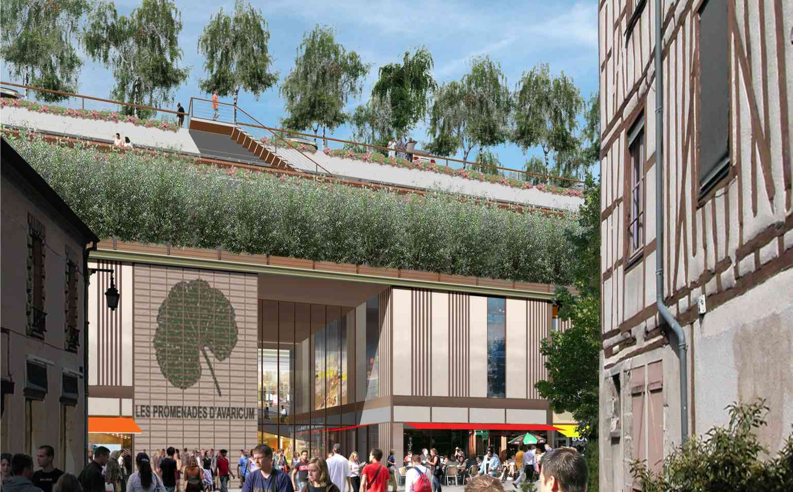

Survolez l'image et agrandissez/réduisez la vue à l'aide de la molette.
Budget: -
Surface totale; Surface SHON: 57 200 m² (dont 21 550 m² de commerces, 1830 m² de logements, 33 820 m² de parking); 1500 m² de logements
Date début: 2006
Date fin: 2006
Maîtrise d'ouvrage: SEGECE
Co-traitant(s): Atelier Alexandre Chemetoff
Description:
Dans le centre-ville de Bourges, le programme de construction d’un centre commercial, d’un grand parking et de logements sociaux s’inscrit dans la perspective de la démolition d’une large emprise de constructions des années 1950. Comment construire dans le plus grand secteur sauvegardé de France avec une économie de moyens qui ne permet pas d’engager de travaux importants ?
Le terrain est traversé par de nombreux réseaux de l’ancien lit de l’Yévrette et l’étude d’impact suggère également la présence de vestiges archéologiques. Pour tirer avantage mais aussi protéger ces ressources, nous n’envisageons pas un ouvrage enterré d’importance qui serait dans l’eau et entraverait le lit de l’ancienne rivière. Au contraire, la superposition de programmes nous semble plus appropriée au site : deux niveaux de commerces, quatre niveaux de parc de stationnement. Les trente logements sont répartis dans des maisons de ville directement accessibles depuis les rues, avec des commerces en rez-de-chaussée.
Leur typologie s’inspire, en les déclinant, des maisons à pan de bois de Bourges. Le visiteur accède au parking sur le toit, véritable observatoire sur la ville. Cette terrasse plantée, espace public en hauteur, correspond au niveau du seuil de la cathédrale de Bourges. Elle reprend aussi le gabarit des fortifications. A chacun des quatre niveaux de stationnement, prolongements des espaces publics de la ville, correspond un thème végétal : osiers, géraniums, pélargoniums, bouleaux. Le stationnement en hauteur permet de libérer le plain pied pour l’espace commerçant. Pour raccorder ce centre commercial au système de rues commerçantes de la ville, un réseau de circulation traverse le bâtiment. De la même manière, les façades en colombage des logements participent à la continuité urbaine qui sous-tend
tout le programme nommé “promenades d’Avaricum” en hommage à l’histoire de Bourges.
{kind=link}
{kind=link}
{kind=link}
{kind=link}